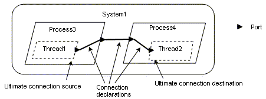

(1) This section provides an informative overview of AADL concepts, structure, and use. In this section the first appearance of a term that has a specific meaning in this standard will be italicized.
(2) An AADL specification represent s a component model of a computer system runtime architecture that consists of the application software (typically embedded, safety-critical, mission-critical, or performance-critical), and the execution platform, i.e., the computing hardware and the physical system. A component represents a part of a system and interacts with other components. A system is hierarchically composed of interacting components. An AADL specification consists of package declarations and property set declarations. AADL packages contain component specifications, i.e., AADL component types and component implementations, as well as feature group types, and annex libraries. This standard defines data, subprogram, subprogram group, thread, thread group, and process as application software component categories, memory, bus, virtual bus, processor, virtual processor, and device as execution platform component categories, and system and abstract as general compositional components. Abstract is a generic component category that can be refined into any of the other categories. They form the core of the AADL modeling vocabulary.
(3) A component type specifies an external interface that other components can operate against in terms of features, i.e., interaction points with other components, flow specifications from component inputs to component outputs, modes as operational states, and properties to characterize a component. Implementations of the component are required to satisfy this specification.
(4) A feature describes an interface of a component through which control and data may be provided to or required from other components. Features can be ports to support directional flow of control and data, subprograms to represent procedure calls, and shared access to data, subprograms, subprogram groups, and bus components. Features can be grouped together into feature groups.
(5) A component implementation specifies a realization of the component in terms of subcomponents, connections between the features of those subcomponents, flows across a sequence of subcomponents, modes, and properties. AADL allows multiple component implementations to associated with a component type to represent component variants.
(6) A subcomponent declares a component instance that is contained in another component by naming its component classifier, i.e., a component type or component implementation. The component hierarchy of a system instance is determined by recursively instantiating the subcomponents of a top-level system.
(7) Any namable model element, e.g., components, features, modes, connections, flows, and subprogram calls, can have properties. Properties are used to represent attributes and other characteristics, such as the period and deadline of threads. When properties are associated with declarations of component types, component implementations, features, subcomponents, connections, flows, and modes, they apply to all respective instances within a system instance. The AADL also supports the specification of instance specific values of any unit in the containment hierarchy of a system instance. AADL tools may record these values for use in the analysis of the system instance or for use in the construction of new system instances.
(8) Property sets are used to define properties, property constants, and property types. This standard defines a set of predeclared properties and property types. Additional properties and property types to support new forms of system analysis can be introduced through property sets. For example, a predeclared property is used to specify the period of a thread. An example of a user-defined property in a property set is a security level property.
(9) AADL packages provide a library-like structure for organizing component classifiers, and feature group types, and annex libraries into separate namespaces, similar to Java packages that are used to organize Java class declarations. Packages can have a nested naming hierarchy, but this hierarchy does not impose any restrictions on whether a package is accessible by other packages. A component classifier in a package is referenced by qualifying its name with the package name. Only those classifiers that have been placed in the public section of a package are accessible to other packages. Furthermore, the packages being named in the reference must be listed in the with clause of the referencing package, i.e., a with clause limits the use of other packages in a given package.
(10) AADL support the specification of partial models such as models of the application software only, the hardware only, specification of a top-level architecture in terms of its subsystems without their realizations, and specification of component templates. Component templates are incompletely specified component classifiers that may be parameterized by component classifier, feature, and feature group type prototypes. These component templates may be later refined through component classifier extension declarations. Component classifier extensions can complete the component specification by supplying an actual for a prototype and by completing partial declaration through refinement. Component extension declarations can also specify new component classifiers by adding features, subcomponents, connections, flows, and properties. This allows conceptual and reference architectures to be specified and to be refined into fully specified runtime architectures, and partial system specifications to evolve into fully specified and configured systems including the deployment of application software on the computing hardware
(11) Application software components model source text, virtual address spaces, concurrent tasks and their interactions. Source text can be written in a programming language such as Ada, C, or Java, or domain-specific modeling languages such as Simulink, SDL, ESTEREL, LUSTRE, and UML, for which executable code may be generated. The source text modeled by a software component may represent a partial application program or model (e.g., they form one or more independent compilation units as defined by the applicable programming language standard). Rules and permissions governing the mapping between AADL specification and source text depend on the applicable programming or modeling language standard. Predeclared component properties identify the source text container and the mapping of AADL concepts to source text declarations and statements. These properties also specify memory and execution times requirements and other known characteristics of the component.
(12) AADL data components represent static data in source text. These data components can be accessed by one or more threads and processes; they do so by indicating that they require access to the external data component. Concurrent access to data is managed by the appropriate concurrency control protocol as specified by a property. Realizations of such protocols can be documented through an appropriate annex declaration, for example, expressed in a Behavior Annex subclause (see Annex Document D).
(13) Data types in the source text are modeled by the declarations: data component type and data component implementation. Thus, a data component classifier represents the data type of data components, ports, and subprogram parameters. The Data Modeling Annex (see Annex Document B) provides guidance on how to approach data modeling with AADL.
(14) The subprogram component models source text that is executed sequentially. Subprograms are callable from within threads and subprograms. Subprograms may require access to data components and may contain data subcomponents to represent local variables. Subprogram groups represent source code libraries.
(15) AADL thread components model concurrent tasks or active objects, i.e., concurrent logical threads. Each logical thread represents an execution sequence through source text (or more exactly, through binary images produced from the compilation, linking and loading of source text). A scheduler manages the execution of a thread. Logical threads may be executed by separate operating system (OS) threads, or they may be combined into a single operating system thread. The dynamic semantics for a thread are defined in this standard using hybrid automata. The threads can be in states such as suspended, ready, and running. State transitions occur as a result of dispatch requests, faults, and runtime service calls. They can also occur if time constraints are exceeded. Error detection and recovery semantics are specified. Dispatch semantics are given for standard dispatch protocols such as periodic, sporadic, aperiodic, timed, hybrid, and background threads. Additional dispatch protocols may be defined. Threads can contain subprogram and data components, and provide or require access to data components.
(16) AADL thread groups support structural grouping of threads within a process. A thread group may contain data, thread, and thread group subcomponents. A thread group may require and provide access to data components.
(17) AADL process components model space partitions in terms of virtual address spaces containing source text that forms complete programs as defined in the applicable programming language standard. Access protection of the virtual address space is by default enforced at runtime, but can be disabled if specified by the property Runtime_Protection. The binary image produced by compiling and linking this source text must execute properly when loaded into a unique virtual address space. As processes do not represent concurrent tasks, they must contain at least one thread. Processes can contain thread groups, threads, and data components, and can access or share data components.
(18) Execution platform components represent computing hardware components that are capable of scheduling threads, of enforcing specified address space protection at runtime, of storing source text code and data and of performing communication for application system connections. The device component represents elements of the physical environment that an embedded system interacts with, such as sensors, actuators, or engines.
(19) AADL processor components are an abstraction of hardware and software that is responsible for scheduling and executing threads. In other words, a processor may include functionality provided by operating systems. Alternatively, operating systems can be modeled like application components. Processors can contain memory and require access to buses. Processors can support different scheduling protocols. Threads are bound to processors for scheduling and execution.
(20) AADL virtual processors represent virtual machines or hierarchical schedulers. Threads can be bound to them. Virtual processors can be used in two ways. Processors and virtual processors can be subdivided into virtual processors by declaring virtual processor subcomponents. Virtual processors can also be declared separately and explicitly bound to processors and virtual processors.
(21) AADL memory components model randomly accessible physical storage such as RAM or ROM. Memories have properties such as the number and size of addressable storage locations. Binary images of source text are bound to memory. Memory can contain nested memory components. Memory components require access to buses.
(22) AADL bus components model communication channels that can exchange control and data between processors, memories, and devices. A bus is typically hardware that supports specific communication protocols, possibly implemented through software. Processors, memories, and devices communicate by accessing a shared bus. Buses can be directly connected to other buses. Logical connections between threads that are bound to different processors transmit their information across buses that provide the physical connection between the processors. Buses can require access to other buses.
(23) AADL virtual bus components represent virtual channels or communication protocols that perform transmission within processors or across buses. Virtual buses can be subcomponents of buses and virtual buses, or virtual buses can be declared separately and explicitly bound to buses and virtual buses.
(24) AADL device components model physical entities in the external environment, e.g., a GPS system, or entities that interface with an external environment, e.g., sensors and actuators as interface between a physical plant and a control system. Devices may represent a physical entity of the modeled system or its (simulated) software equivalent. Examples of devices are timers, which exhibit simple behavior, or a camera or GPS, which exhibit complex behavior. Devices are logically connected to application software components and physically connected to processors via buses. They cannot store nor execute external application software source text themselves, but may include driver software executed on a connected processor. A device requires access to buses.
(25) AADL system components model hierarchical compositions of software and execution platform components. A system may directly contain data, subprogram, subprogram groups, process, memory, processor, virtual processor, bus, virtual bus, device, system as well as abstract subcomponents. Thread and thread group subcomponents must be declared in processes and are indirectly part of a system that contains these processes. A system component may require and provide access to data and bus components. Execution platform component can be system components in their own right and be modeled using system implementations. For example, a system implementation can be associated with a device that models a camera. This system implementation describes the internal of the camera in terms of the CCD sensor a device, a DSP processor, a general purpose processor as well a software that implements the image processing and download capability of the camera.
(26) AADL modes represent the operational states of software, execution platform, and compositional components in the modeled physical system. A component can have mode-specific property values. A component can also have mode-specific configurations of different subsets of subcomponents and connections. In other words, a mode change can change the set of active components and connections. Mode transitions model dynamic operational behavior that represents switching between configurations and changes in component-internal characteristics, such as conditional execution source text sequences or operational states of a device, that are reflected in property values. Other examples of mode-specific property values include the period or the worst-case execution time of a thread. A change in operating mode can have the effect of activating and deactivating threads for execution and changing the pattern of connections between threads. A mode subclause in a component implementation specifies the mode states and mode change behavior in terms of transitions; it specifies the events as transition triggers. Subcomponent and connection declarations as well as property associations declare their applicability (participation) in specific modes.
(27) This standard defines several categories of features: data port, event port, event data port, feature group, subprogram parameter, and provided and required access to data, subprograms, and buses. Data ports represent connection points for transfer of state data such as sensor data. Event ports represent connection points for transfer of control through raised events that can trigger thread dispatch or mode transition. Event data ports represent connection points for transfer of events with data, i.e., messages that may be queued. Feature groups support grouping of ports and other features, such that they can be connected to other components through a single connection. Provided subprogram access features represent entrypoints to code sequences in source text that is associated with a data type or a thread that can be called locally or remotely. Subprogram parameters represent in and out parameters of a subprogram. Data component access represents provided and required access to shared data. Bus component access represents provided and required access to buses for processors, memory, and devices.
(28) AADL connections specify interaction between components at runtime. A semantic connection is represented by a set of one or more connection declarations that follow the component hierarchy from the ultimate connection source to the ultimate connection destination. For example, in Figure 1 there is a connection declaration from a thread out port in Thread1 to a containing process out port in Process3. This connection is continued with a connection declaration within System1 from Process3’s out port to Process4’s in port. The connection declaration continues within Process4 to the thread in port contained in Thread2. Collectively, this sequence of connections defines a single semantic connection between Thread1 and Thread2. Threads, processes, systems, and ports are shown in graphical AADL notation. For a full description of the graphical AADL notation see Appendix D .

Figure 1 Example Semantic Connections
(29) Flow specifications describe externally observable flow of information in terms of application logic through a component. Such logical flows may be realized through ports and connections of different data types and a combination of data, event, and event data ports, as well as through data components. Flow specifications represent flow sources, i.e., flows originating from within a component, flow sinks, i.e., flows ending within a component, and flow paths, i.e., flows through a component from its incoming ports to its outgoing ports.
(30) Flow implementations describe actual flow sequences representing flow specifications through components and sets of components across one or more connections. They are declared in component implementations. An end-to-end flow specifies a flow that starts within one subcomponent and ends within another subcomponent. Flow specifications, flow implementations, and end-to-end flows can have expected and actual values for flow related properties, e.g., latency or rounding error accumulation.
(31) An actual embedded system is represented by an instance of an AADL system implementation that consists of subcomponents representing the application software, the computing platform, and the physical environment.
(32) An AADL specification may be used in a variety of ways by a variety of tools during a broad range of life- cycle activities, e.g., for documentation during preliminary specification, for schedulability or reliability analysis during design studies and during verification, for generation of system integration code during implementation. Note that application software components must be bound to execution platform components - ultimately threads to processors and binary images to memory in order for the system to be analyzable for runtime properties and the actual system to be constructed from the AADL specification. Many uses of an AADL specification need not be fully automated, e.g., some implementation steps may be performed by hand.
(33) The AADL core language is extensible through property sets, annex subclauses and annex libraries that can be standardized or user-defined. Examples of standardized extensions are the Error Model Annex (see Annex Document C) and the Behavior Annex (Annex Document D). Property sets extend AADL by introducing additional properties that can be associated with elements of a model, while annexes introduce sublanguages that can be used to annotate a model. Annex subclauses consist of annex-specific sublanguages whose constructs can be added to component types and component implementations. Annex libraries are declarations of reusable annex-specific sublanguage elements that are placed in AADL packages and can be referenced in annex subclauses.